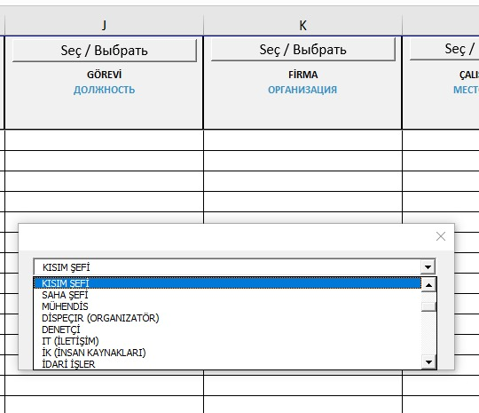
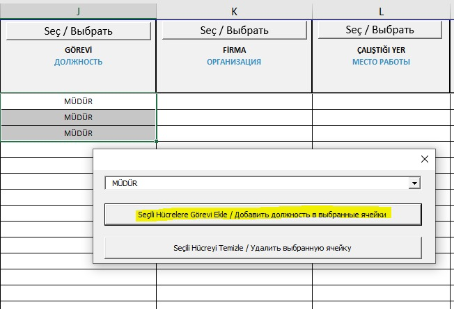
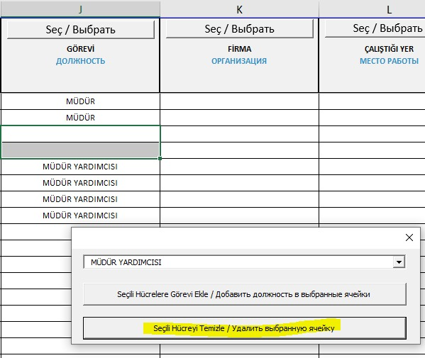
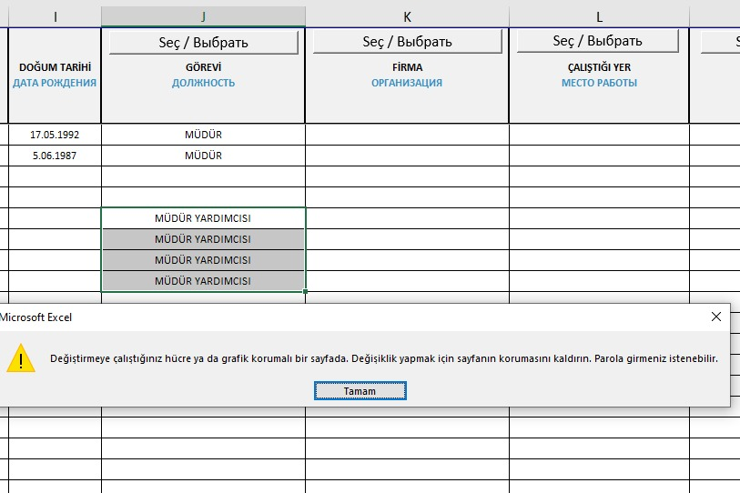
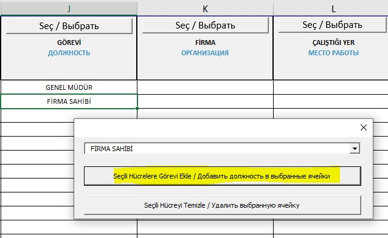
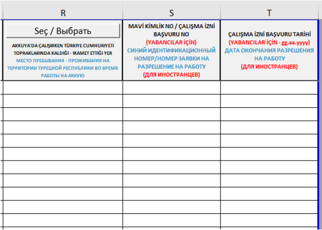
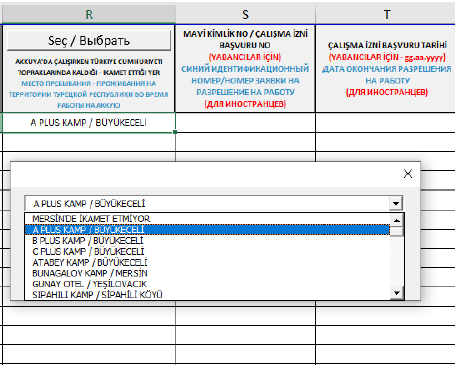
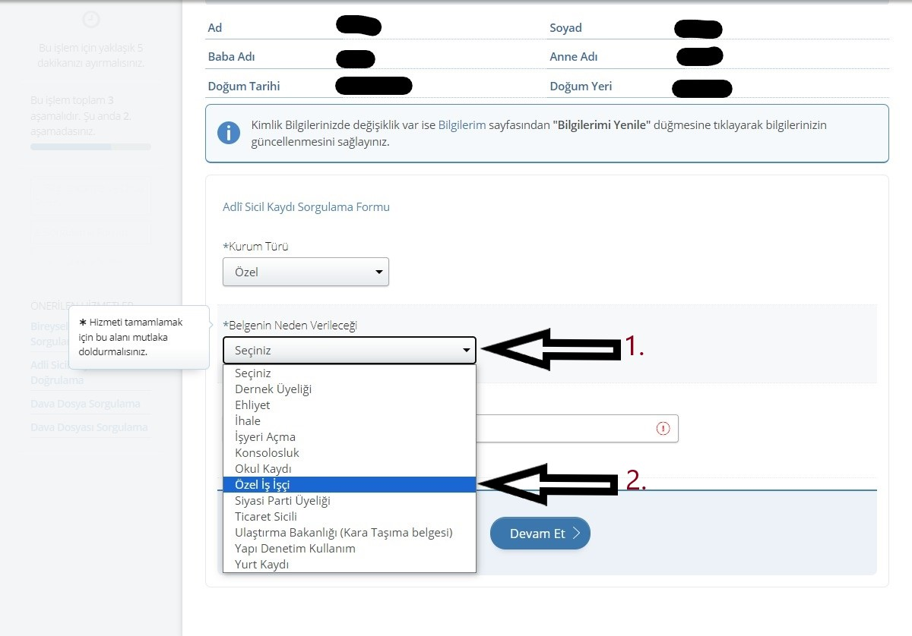
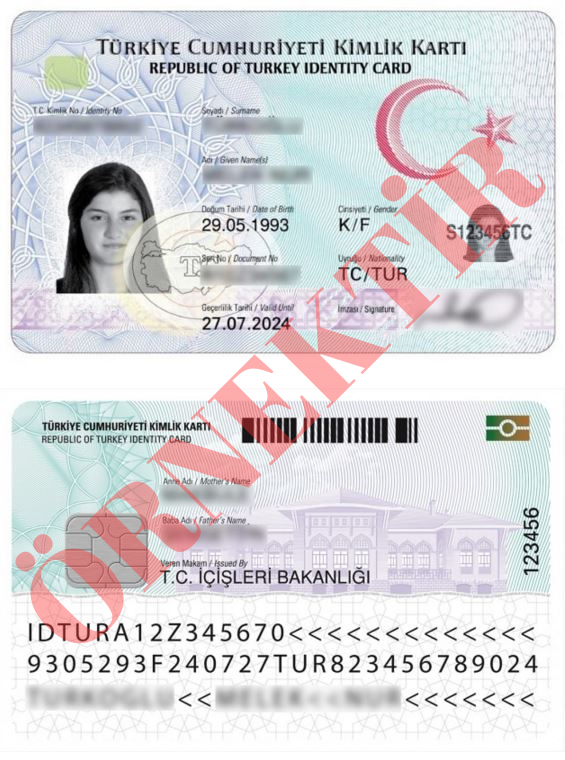
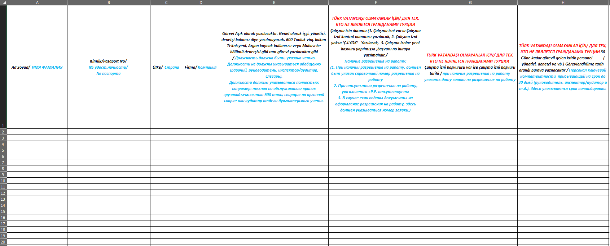

Ziyaretçi ya da sürekli çalışan fark etmeksizin, saha giriş onayı süreci iki aşamadan oluşmaktadır:
1.Birinci Aşama: Evrakların Akkuyu tarafından incelenmesi.
2.İkinci Aşama: Saha giriş onayının alınması. (Bakanlık incelemesi tamamlandıktan sonra tarafınıza bilgi verilecek ve giriş için gerekli evraklar talep edilecektir.)
Güvenlik Direktörü Artem Zarodysh ve Güvenlik Eş Direktörü Selim Temren’in dikkatine hitaben, şirket yöneticisi veya yetkili kişi (vekaletname ile) tarafından
imzalanmış resmi bir mektubun onayının ardından, aşağıda listelenen evrakların e-posta yoluyla (muge.dundar@t2ic.com , hafize.isin@t2ic.com)
tarafımıza iletilmesi gerekmektedir:
• Kimlik Fotokopisi veya Tarama Görüntüsü
• Adli Sicil Kaydı
• Sahada Dikkat Edilecek Hususlarla İlgili Bilgilendirme
• Sahaya Girişe İlişkin Açık Rıza Formu
• Eksiksiz ve doğru şekilde doldurulmuş Personel Giriş Excel Tablosu
Fiziksel evrak teslimi zorunlu değildir.
Ayrıca, evrakların doğru sıralamayla adlandırılması gerektiğini önemle hatırlatırız. Bu düzenleme, sistemlerin işleyişi ve süreçlerin hızlandırılması açısından oldukça önemlidir.
Evrakların, personelin pasaportta yer aldığı şekliyle büyük harflerle isimlendirilmesi ve her bir kişi için ayrı bir dosya oluşturulması gerekmektedir. Dosyalar, kişinin Türkiye
Cumhuriyeti Kimlik Numarası'nın son üç hanesi ile adlandırılmalı ve tüm evraklar 7Z formatında sıkıştırılıp PDF formatında iletilmelidir.
Örnek: ALI KAYA 456 dosyası içerisinde;
ALI KAYA KIMLIK
ALI KAYA AÇIK RIZA
ALI KAYA ADLI SICIL
ALI KAYA YASAKLI FALIYETLER
ÖNEMLİ:Eğer personel başka bir firmadan geliyorsa, geldiği firmanın sahada çalışan bir firma ile yaptığı sözleşmenin ilk ve son sayfalarının
da iletilmesi gerekmektedir.
Sağlık Durumu: Sağlık takip formu (sağlık ve iş sağlığı güvenliği eğitimini geçtiğini kanıtlayan belge) olmadan, en fazla 5 iş günü süreyle ziyaretçi olarak saha
girişi yapılabilir. Daha uzun süre sahada bulunacak kişilerinsubcontractor@t2ic.com adresi ile iletişime geçmesi gerekmektedir.
Akkuyu Nükleer Güç Santrali (“NGS”) Sahasına Giriş İçin Yapılacak İşlemler Kapsamında Açık Rıza Beyanı
Bu belge, veri sorumlusu ve veri işleyen sıfatıyla,
Akkuyu Nükleer Güç Santrali sahasına giriş için yapılacak işlemler çerçevesinde, kişisel verilerin kaydedilmesi, saklanması, güncellenmesi, sınıflandırılması ve
işlenmesini; ayrıca ilgili mevzuatın izin verdiği hallerde, açık rıza gösterilmesi durumunda üçüncü kişilere açıklanmasını ve devredilmesini kabul ve beyan eder.
1. Açık Rıza Beyanı toplamda 2 sayfadan oluşmaktadır. İlk sayfada, ok ile işaretlenmiş alana personelin adı ve soyadı eksiksiz olarak yazılmalıdır.
2. İkinci sayfanın alt kısmında, "Adı Soyadı" ibaresi ("1." numaralı ok ile işaretli alan) bulunan iki bölüme, personelin adı ve soyadı eksiksiz bir şekilde yazılmalıdır.
"İmza" ibaresi ("2." numaralı ok ile işaretli alan) bulunan iki bölüme, personelin imzası atılmalıdır.
"T.C. Kimlik Numarası" ibaresi ("3." numaralı ok ile işaretli alan)bulunan kısma, personelin Türkiye Cumhuriyeti Kimlik Numarası yazılmalıdır.
"Tarih" ibaresi ("4." numaralı ok ile işaretli alan)bulunan kısma, belgenin hazırlandığı tarih yazılmalıdır.
"Telefon Numarası" ibaresi ("5." numaralı ok ile işaretli alan) bulunan kısma, personelin telefon numarası yazılmalıdır.
"Elektronik Posta Adresi" ibaresi ("6." numaralı ok ile işaretli alan) bulunan kısma, personelin e-posta adresi eksiksiz şekilde yazılmalıdır.
Akkuyu Nükleer Güç Santrali (“NGS”) Sahasında Uyulması Gereken Kurallara İlişkin Belge
Bu belge, Akkuyu Nükleer Güç Santrali sahasında uyulması gereken kurallara ilişkin olup, iki kısımdan oluşmaktadır. Her iki kısımda da aynı bilgiler eksiksiz
ve doğru şekilde doldurulmalıdır.
"Adı Soyadı" ("1." numaralı ok ile işaretli alan) kısımlarına, personelin adı ve soyadı yazılmalıdır.
"T.C./PAS No" ("2." numaralı ok ile işaretli alan) kısımlarına, Türkiye Cumhuriyeti vatandaşı ise T.C. Kimlik Numarası, yabancı uyruklu ise pasaport numarası yazılmalıdır.
"Firma" ("3." numaralı ok ile işaretli alan) kısımlarına, Türkiye Cumhuriyeti vatandaşı ise T.C. Kimlik Numarası, yabancı uyruklu ise pasaport numarası yazılmalıdır.
"Okudum, Anladım." ("4." numaralı ok ile işaretli alan) kısımlarına ise belgenin doldurulduğu tarih yazılmalıdır.
Akkuyu Nükleer A.Ş. Şantiye Sahasına Giriş Yapan Personelin İkamet Bilgileri Hakkında
Akkuyu Nükleer A.Ş. şantiye sahasına giriş yapan personelin güvenlik soruşturmalarının Enerji Bakanlığı tarafından gerçekleştirilebilmesi
için, personelin ikamet adreslerinin tarafımıza bildirilmesi zorunludur. Giriş kartları, bu listelere göre çalışanlara teslim edilecek olup,
bildirilmemiş olanlar için Akkuyu Nükleer A.Ş. tarafından kart teslimi yapılmayacağını önemle bildiririz.
Bakanlık evraklarını kontrol amacıyla tarafımıza iletirken, eğer personelin ikamet adresi henüz belirlenmemişse ya da değişebilir bir durumda
ise, saha giriş kart talebinde bulunurken ikamet bilgilerini güncellemeniz ya da eklemeniz MUTLAKA gerekmektedir.
Akkuyu Nükleer A.Ş. şantiye sahasında çalışacak personelin veri girişine yönelik eklenen sütunlar ve kullanım talimatları şu şekildedir:
• Personel giriş tablosunda, zorunlu olarak seçim yapılması gereken sütunlar mevcuttur. Bu sütunlarda seçim yapmak için Seç/Выбрать
butonuna tıklamanız gerekmektedir. Bu alanlara manuel olarak veri girişi yapılamaz ve kopyalanmış bir metin yapıştırılamaz. Bu sütunlar boş
bırakılamaz ve seçenek dışındaki bir veri kabul edilemez.
• Seç/Выбрать butonu bulunmayan sütunlar ise manuel olarak doldurulmalıdır. Bu sütunlardaki tüm bilgiler büyük Latin harfleriyle yazılmalıdır.

Seçilen Veriyi İlgili Sütuna Yapıştırma Talimatı:
• Sütundaki ilgili satır veya satırları seçmek için mouse imlecini kullanarak seçim yapın.
• Açılan pencerede “Seçili Hücrelere Görevi Ekle” butonuna tıklayın. Seçilen veri, seçilen satırlara eklenir. Ne kadar satır seçilirse,
o kadar satıra veri eklenir.

Girilen Veriyi Silme Talimatı:
• İlgili sütundaki veriyi silmek için “Seçili Hücreyi Temizle” butonuna tıklayın.

• DELETE komutuyla silme işlemi yapılamaz. DELETE komutuyla silme girişiminde uyarı mesajı alınır.

Veri Değişikliği Talimatı:
• İlgili veri üzerinde değişiklik yapmak için Seç/Выбрать
butonuna tıklayıp yeni bilgiyi seçin. Ardından “Seçili Hücrelere Görevi Ekle” butonuna tıklayarak değişiklikleri tamamlayın.

Tablonun En Sonuna Eklenen Yeni Sütunlar:
R sütunu: Personelin Akkuyu’da çalışırken Türkiye Cumhuriyeti topraklarında ikamet ettiği yer. Bakanlık evraklarının
kontrolünde bu sütunun doldurulması zorunlu değildir, ancak fiziki kart talebinde bulunurken bu alan doldurulmalıdır.
Boş bırakılamaz ve personel Mersin il sınırı içerisinde yaşıyorsa, ilgili ikamet adresi seçilmelidir. Mersin il sınırları
dışında yaşıyorsa “Mersin’de ikamet etmiyor” seçeneği kullanılmalıdır.
 
S sütunu:Yabancı personel için çalışma izni başvuru numarası veya mavi kimlik numarası (99 ile başlayan kimlik) girilmelidir.
Türk personeller veya görevlendirme ile saha ziyareti gerçekleştiren personeller için bu sütun doldurulması zorunlu değildir.
T sütunu:Çalışma izni başvurusu yapılmışsa yabancı personel için bu sütun doldurulmalıdır. Fiziki kimlik mevcutsa doldurulmaz.
Türk personeller ve saha ziyareti gerçekleştiren görevliler için doldurulması zorunlu değildir.
Doldurulacak Diğer Alanlar:
1. Geliş Tarihi: Evrakların hazırlandığı tarih.
2. Talep Eden: Firmanın personel sorumlusunun adı soyadı.
3. Talep Eden İletişim Bilgileri: Firmanın personel sorumlusunun cep telefon numarası.
4. Ad: Firmada göreve başlayacak personelin adı.
5. Soyad: Firmada göreve başlayacak personelin soyadı.
6. TC/PAS: Personelin kimlik veya pasaport numarası.
7. Baba Adı: Yabancı personeller için baba adı.
8. Doğum Yeri: Personelin doğum yeri.
9. Doğum Tarihi: Personelin doğum tarihi.

10. Görevi: Personelin görev bilgisi.
11. Firma: Personelin çalışacağı firma bilgisi.
NOT: Eğer firma listede yoksa bizimle iletişime geçin.
12. Çalıştığı Yer: Personelin görev yapacağı yer.
13. Cinsiyet: Personelin cinsiyet bilgisi.
14. Çalışan Telefon Numarası: Personelin telefon numarası.
15. Çalışan Yakını Telefon Numarası: Personelin yakınının telefon numarası.
16. Adli Sicil Kaydı ve Sağlık Kısıtlamaları: Personelin varsa adli sicil kayıt ve sağlık kısıtlamaları.
17. Uyruk: Personelin uyruk bilgisi.
NOT: Tüm alanlar talimatlara uygun olarak eksiksiz doldurulmalıdır.
Not: Adli sicil belgesinin son 3 ay içinde alınmış olması gerekmektedir.
Bu adımlar, e-Devlet üzerinden Adli Sicil Kaydı belgesinin nasıl alınacağını açık bir şekilde özetlemektedir. Firmanın ismi, başvuru amacınız
ve diğer gerekli bilgilerin doğru girilmesi kritik önem taşır. İşte özetle yapılması gerekenler:
1. E-Devlet Girişi: E-Devlet hesabınıza giriş yapın ve arama kısmına "adli sicil" yazarak ilgili sayfaya gidin.
2. İlk Bilgilendirme: Karşınıza çıkan bilgilendirme metnini onaylayın ve "Devam Et"e basın.

3. Adli Sicil Formu: Formda, "Kurum Türü"nü "Özel", "Belgenin Neden Verileceği"ni "Özel İş İşçi" olarak seçin.

4. Firma İsmi: "Belgenin Nereye Verileceği" kısmına çalışacağınız firmanın ismini tam olarak yazın ve "Devam Et"e basın.
5. Belge İndir: Tüm işlemler tamamlandıktan sonra, belgeyi PDF formatında indirerek kaydedin.

Türkiye Cumhuriyeti Kimlik Kartı'nın fotokopisinin veya taranmış halinin ön ve arka yüzleri, belirtilen görseldeki gibi alt alta
ve net bir şekilde görünmelidir. Bu belgelerin okunabilir ve eksiksiz olması önemlidir, böylece tüm bilgiler doğru bir şekilde görülebilir.
Tarama veya fotokopi işlemini yaparken, özellikle kimlik bilgileri ve fotoğrafın net olduğuna emin olun.
Akkuyu NGS inşaat alanına giriş izni ve personel giriş kartlarının düzenlenmesi için, şirket yöneticisi veya yetkili kişi tarafından imzalanmış (vekaletname ile) ve
Güvenlik Direktörü Artem Zarodysh ve Güvenlik Eş Direktörü Selim Temren’in dikkatine yazılmış bir yazı gereklidir. Bu yazı, gerekli mektup ekleriyle
birlikte aşağıdaki adımlar izlenerek gönderilmelidir:
1. Yazının Gönderimi:
Güvenlik Direktörü Artem Zarodysh ve Güvenlik Eş Direktörü Selim Temren’e hitaben yazılan yazı, office@t2ic.com adresine iletilmelidir.
2. Belgelerin Kontrolü:
Resmi yazı ve ekleri, yabancı personeller için id@t2ic.com , Türk personeller için muge.dundar@t2ic.com ve hafize.isin@t2ic.com
e-posta adreslerine gönderilmelidir.
3. Personel Listesi Tablosu:
• Tablo, şirket yöneticisi veya yetkili kişi tarafından kaşe ve imzalanmış olmalıdır.
• Tablo, ekli belgelerde yer alan personel isimleriyle birebir eşleşmelidir. Aksi takdirde, belgeler işleme alınmayacaktır.
Bu süreçlerin eksiksiz ve doğru bir şekilde tamamlanması, giriş izni ve kart düzenlemeleri için zorunludur.
